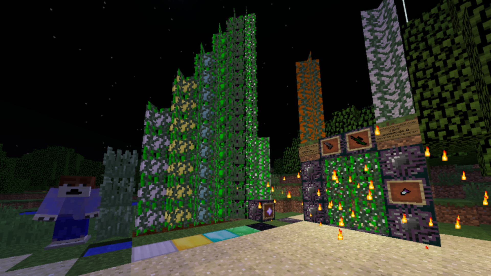

The Grass Mod for Minecraft 1.11.2

I wanted to make my own Minecraft mod, so i went searching for easy ways to do so and stumbled upon MCreator.
With it i tried to make numerous mods but bugs held me back, and so i only released this mod in 1/10/2017 for Forge 1.11.2
I think the portal blocks don't look too bad even though they're just multiple textures over eachother in different colours.
Link
to the MCreator page with download.